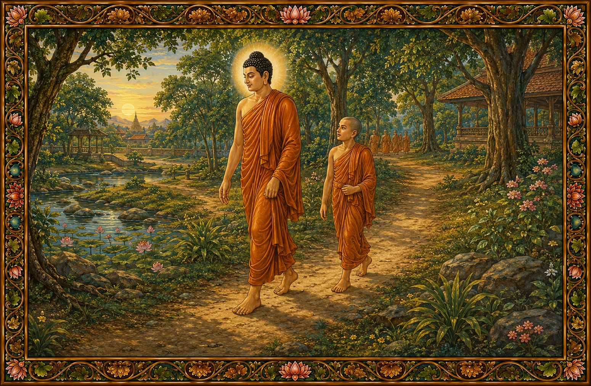

Комментарий к Mahārāhulovāda Sutta (mahārāhulovādasuttavaṇṇanā)
113. «Так я слышал» (Evaṃ me sutaṃ) и так далее — это Mahārāhulovāda Sutta.
Здесь выражение «piṭṭhito piṭṭhito anubandhī» означает: не упуская из виду, без перерыва, следуя вплотную шаг за шагом, в точности повторяя позы Будды.
В то время Благословенный (Bhagavā) шел впереди грациозной походкой, ступая след в след, а тхера Рахула следовал за ним по пятам, шаг за шагом, за Тем, кто наделен десятью силами (Dasabala).
92. Там Благословенный сиял, как превосходный слон в состоянии муста, вышедший на ровную землю среди цветущего леса деревьев сала, а благородный Рахула сиял, как молодой слоненок, идущий вслед за превосходным слоном.
Благословенный сиял, как гривастый лев, вышедший вечером из драгоценной пещеры на поиски пищи, а благородный Рахула — как молодой лев, следующий за царем зверей.
Благословенный сиял, как огромный тигр с могучими клыками, выходящий из лесной чащи, украшенной драгоценными горами, а благородный Рахула — как молодой тигр, следующий за царем тигров.
Благословенный сиял, как царь супаннов (supaṇṇa), вылетающий из рощи хлопковых деревьев, а благородный Рахула — как молодой супанна, летящий вслед за царем.
Благословенный сиял, как царь золотых гусей (haṃsa), взмывающий с горы Cittakūṭa в небесные просторы, а благородный Рахула — как молодой гусь, летящий за повелителем гусей.
Благословенный сиял, как огромный золотой корабль, входящий в великое озеро, а благородный Рахула — как маленькая лодочка, следующая за золотым кораблем.
Благословенный сиял, как Вселенский Монарх (Cakkavatti), величественно странствующий в небесных просторах силой Драгоценного Колеса (cakkaratana), а благородный Рахула — как Драгоценный Советник (pariṇāyakaratana), следующий за царем.
Благословенный сиял, как царь звезд луна, восходящий на безоблачном небе, а благородный Рахула — как чистая звезда Осадхи (osadhitārakā), следующая по пути царя звезд.
Благословенный родился в роду царя Okkāka, происходящем от Mahāsammata, как и благородный Рахула. Благословенный родился в царской семье кхаттиев (khattiya), безупречно чистой, словно молоко, налитое в раковину, как и благородный Рахула. Благословенный оставил царство и принял монашество (pabbajā), как и благородный Рахула. Тело Благословенного было украшено тридцатью двумя признаками Великого Человека, необычайно прекрасное, подобно украшенной драгоценностями арке в городе дэвов или полностью распустившемуся дереву pāricchattaka, как и тело благородного Рахула.
Таким образом, оба были наделены высокими устремлениями, оба были царственными отшельниками, оба были утонченными кхаттиями, оба имели золотистый цвет кожи, оба обладали великими признаками и оба шли одним и тем же путем. Идя друг за другом, они сияли так, словно два лунных диска, два солнечных диска или два Sakka, Suyāma, Santusita, Sunimmita, Vasavatti, Mahābrahmā и так далее затмевали великолепие друг друга.
Там достопочтенный Рахула, следуя по пятам за Благословенным, посмотрел на Татхагату (Tathāgata) от подошв Его ног до кончиков волос на макушке.
93. Увидев великолепие облика Будды, он подумал:
«Благословенный сияет телом, украшенным тридцатью двумя признаками Великого Человека; окруженный сиянием размером в маховую сажень, Он словно находится среди рассыпанной золотой пыли; или подобен золотой горе, обвитой лозами молний; или искусно созданной с помощью механизмов и нитей золотой колонне (agghika), усыпанной драгоценностями. И хотя Он укрыт одеянием из красных лоскутов, Он подобен золотой горе, обернутой в красное шерстяное покрывало; или золотой колонне, украшенной коралловыми лозами; или золотой ступе (cetiya), почитаемой подношениями из китайской киновари; или золотому столбу, покрытому лаковой смолой; или полной луне, мгновенно восходящей из-за красных облаков! О, как безгранично великолепие этого существа, достигшего совершенства силой тридцати Парами!»
Затем, посмотрев на себя, он подумал:
«Я тоже сияю. Если бы Благословенный правил как Вселенский Монарх на четырех великих континентах, Он назначил бы меня на должность Драгоценного Советника. Будь это так, континент Jambudīpa сиял бы необычайно».
Так, опираясь на собственное существо, он пробудил в себе страстное желание (chandarāga), связанное с мирской жизнью.
Благословенный, идущий впереди, также подумал:
«Тело Рахулы теперь полностью сформировалось — кожа, плоть и кровь. Воистину, пришло время для его ума погрузиться в притягательные чувственные объекты, такие как формы и прочее. Как же Рахула проводит свое время?»
Затем, лишь обратив внимание, Он увидел эту мысль, возникшую в уме Рахулы, подобно тому, как можно увидеть рыбу в прозрачной воде или отражение лица в идеально чистом зеркале. Увидев это, Он подумал:
«Этот Рахула, будучи моим родным сыном и следуя за мной, думает: "Я сияю, моя сфера зрения (vaṇṇāyatana) прекрасна", и тем самым пробуждает страстное желание, связанное с мирской жизнью, опираясь на собственное существо. Он вошел в воду в неположенном месте, сбился с пути, бродит по ненадлежащим пастбищам; как путник, заблудившийся в направлениях, он идет туда, куда идти не следует.
И это загрязнение (kilesa), разрастаясь внутри него, не позволит ему увидеть свое собственное благо таким, каково оно есть, ни благо других, ни благо обоих. Вследствие этого оно заставит его принять перерождение в аду, в мире животных, в мире голодных духов (peta), в сонме асуров (asura) и даже в тесной утробе матери, тем самым ввергнув его в безначальный круговорот сансары (saṃsāra).
Воистину:
Жадность порождает вред, жадность разрушает ум;
Опасность возникает изнутри, но люди этого не осознают.
Жадный не знает блага, жадный не видит Дхамму (Dhamma);
И когда жадность одолевает человека, наступает полная тьма. (Itivuttaka 88)
И подобно тому, как огромный корабль, полный множества драгоценностей и набирающий воду через пробитую доску, не следует оставлять без внимания ни на мгновение, а нужно быстро заделать пробоину, точно так же не следует оставлять без внимания и это загрязнение. Я обуздаю его до того, как это загрязнение разрушит в нем драгоценность добродетели (sīla) и другие благие качества».
Так Он принял решение.
Кроме того, в подобных случаях Будды совершают «взгляд слона» (nāgavilokana). Поэтому, как золотая статуя, приводимая в движение механизмом, Он повернулся всем телом и, остановившись, обратился к благородному Рахуле. Ссылаясь на это, сказано: «Тогда Благословенный обернулся и посмотрел» и так далее.
Здесь фразы, начинающиеся со слов «Какая бы ни была форма» (yaṃkiñci rūpaṃ), были во всех подробностях разъяснены в разделе о совокупностях (Khandhaniddesa) в Visuddhimagga. Фразы, начинающиеся со слов «Это не мое» (netaṃ mamā), были объяснены в Mahāhatthipadopama Sutta.
«Только ли форма, о Благословенный?» — почему он спрашивает об этом? Говорится, что услышав: «Всякая форма — не моя, я не являюсь ею, она не моя самость (attā»), у него возникла мысль: «Благословенный утверждает, что всю форму следует рассматривать именно так с помощью мудрости прозрения (vipassanāpaññā). Как же тогда следует поступать по отношению к чувствам (vedanā) и остальному?» Поэтому, исходя из этих рассуждений, он задает вопрос.
Ведь этот достопочтенный Рахула был искусен в методах; когда ему говорили: «Этого делать не следует», он понимал с помощью сотни или даже тысячи методов, что «и этого делать не следует, и вот этого делать не следует». Тот же самый метод применялся и когда говорили: «Это следует делать».
Воистину, этот достопочтенный жаждал обучения; рано утром во дворе Gandhakuṭi он рассыпал пригоршню песка с мыслью: «Пусть сегодня я получу от Истинно Всепробужденного, от моего наставника (Upajjhāya) столько же наставлений и поучений, сколько здесь песчинок».
Сам Истинно Всепробужденный, ставя его на первое место, сказал: «Монахи, среди моих учеников-монахов, жаждущих обучения, Рахула является выдающимся». Таким образом, Он признал его лучшим в обучении. И сам этот достопочтенный среди общины монахов (bhikkhusaṅgha) издал этот львиный рык:
«Царь Дхаммы, мой отец, полностью познав всё это, В присутствии общины монахов назвал меня выдающимся. Я — первый среди жаждущих обучения, восхваляемый Царем Дхаммы; А мой высший спутник — среди тех, кто принял монашество с верой. Царь Дхаммы — мой отец, а хранитель Дхаммы (Dhammarakkha) — мой дядя; Сарипутта — мой наставник, давший мне всё учение Победителя (Jina)».
Затем, поскольку не только форму, но и чувства, и остальное следует рассматривать таким же образом, Благословенный сказал Рахула такие слова: «И форма, Рахула…» [Слова] «ko najjā» означают «ko nu ajja» (кто же сегодня).
Говорят, тхера подумал:
«Истинно Всепробужденный, зная о моем страстном желании, опирающемся на мое существо, не стал говорить обиняками: "Отшельнику (samaṇa) не подобает мыслить подобным образом", и не послал вестника со словами: "Иди, монах, и скажи Рахуле: «Впредь не допускай таких мыслей»". Но стоя прямо передо мной, словно хватая за чуб вора с украденным добром, Он дал мне наставление Сугаты лицом к лицу. А ведь наставление Сугаты — великая редкость даже на протяжении бесчисленных кальп. Получив наставление лично от такого Будды, какой же разумный и мудрый человек пойдет сегодня в деревню за подаянием?»
Тогда, отказавшись от приема пищи, этот достопочтенный развернулся с того самого места, где он получил наставление от стоящего Будды, и сел у подножия некоего дерева.
И даже Благословенный, видя, что достопочтенный возвращается, не сказал: «Не возвращайся пока, Рахула, тебе пора собирать подаяние». Почему? Говорят, Его мысль была такова: «Пусть он сегодня вкусит бессмертную пищу осознанности, направленной на тело (kāyagatāsati)».
Достопочтенный Сарипутта увидел» (addasā kho āyasmā sāriputtoti) — означает, что он увидел Рахулу, следуя позади Благословенного после того, как Тот ушел.
Говорят, у этого достопочтенного был один распорядок, когда он пребывал в одиночестве, и другой — когда он пребывал вместе с Благословенным. Действительно, когда два главных ученика (aggasāvaka) пребывали одни, рано утром они подметали свои жилища (senāsana), приводили в порядок тела, входили в состояние сосредоточения (samāpatti), а затем, посидев вместе, отправлялись за подаянием (bhikkhācāra) по собственному усмотрению.
Но когда тхера пребывал вместе с Благословенным, он так не поступал. В это время Благословенный, окруженный общиной монахов (bhikkhusaṅgha), отправлялся за подаянием первым. Когда Он уходил, тхера выходил из своего жилища и, думая: «В месте, где живет много людей, не все могут поддерживать чистоту и порядок, или же кто-то на это не способен», ходил туда-сюда и подметал неподметенные места. Если оставался неубранный мусор, он его выбрасывал. Если в месте, где должна храниться питьевая вода, не было кувшина с водой, он его туда ставил.
Он подходил к больным и спрашивал: «Друзья (āvuso), что мне принести вам? Чего вы желаете?» Он подходил к молодым монахам, еще не проведшим ни одного сезона дождей (vassa), и наставлял их: «Радуйтесь, друзья, не впадайте в уныние; Учение Будды (buddhasāsana) полно практики (paṭipatti)». Выполнив всё это, он отправлялся за подаянием самым последним.
Подобно тому как Вселенский Монарх
(Cakkavatti), желая куда-либо отправиться, выходит
первым в окружении своей армии, а Драгоценный
Советник (pariṇāyakaratana), организовав армейские
отряды, выходит позже, точно так же Благословенный,
Вселенский Монарх Истинной Дхаммы (Saddhammacakkavatti),
окруженный общиной монахов, выходит
первым, а Полководец Дхаммы (Dhammasenāpati), подобный
Драгоценному Советнику Благословенного,
выполнив эти обязанности, выходит самым
последним.
______________________________________________
Выйдя таким образом, в тот день он увидел благородного Рахула, сидящего у подножия некоего дерева. Поэтому и сказано: «Он увидел, следуя позади».
Но почему он наставил его в осознанности дыхания (ānāpānassati)? Потому что это подходило к его позе. Говорят, тхера, не подумав о том, что «Благословенный уже дал ему объект медитации (kammaṭṭhāna), связанный с формой (rūpa)», рассудил так: «То, как он сидит — неподвижно и ничем не связанный, — говорит о том, что этот объект медитации отлично подходит для его позы». И поэтому сказал эти слова.
Здесь [выражение] «ānāpānassatī» означает: «Осознав вдохи и выдохи, породи на их основе четверичные или пятеричные джханы (jhāna), развей прозрение (vipassanā) и достигни состояния Араханта (arahatta)».
«Имеет великий плод» (mahapphalā hoti) — насколько велик этот плод? Здесь монах, посвятивший себя осознанности дыхания, сидя за один присест, уничтожает все загрязнения (āsava) и достигает состояния Араханта. Если же он не способен на это, во время смерти он становится самасиси (samasīsī — тем, чье прекращение загрязнений и конец жизни наступают одновременно). Если он не способен и на это, он перерождается в мире дэвов и, услышав Дхамму от дэва-путты, проповедующего Дхамму, достигает состояния Араханта. Если и это ему не удается, то в эпоху, когда нет Будд, он реализует пробуждение Паччекабудды (paccekabodhi). Если он не реализует и его, то в присутствии Будд он становится тем, кто обладает быстрым сверхзнанием (khippābhiññā), подобно тхере Бахии (Bāhiya) и другим. Вот насколько велик этот плод.
«Обладает великой пользой» (mahānisaṃsā) — это синоним того же самого слова. И об этом было сказано:
«Тот, чья осознанность дыхания полностью и хорошо развита, постепенно практикуется так, как учил Будда, — тот озаряет этот мир, словно луна, освободившаяся от облаков». (Theragāthā 548; Paṭisambhidāmagga 1.1.60)
Видя эту великую плодотворность, тхера наставил в этом своего ученика (saddhivihārika).
Таким образом, Благословенный преподал объект медитации, связанный с формой, а тхера — осознанность дыхания. Оба они, преподав объекты медитации, ушли, а благородный Рахула остался в монастыре (vihāra).
Хотя Благословенный знал, что тот остался, Он сам не взял с собой ни твердой, ни мягкой пищи, не послал ее через тхеру Ананду, и не подал знака великому царю Пасенади, Анатхапиндике или кому-либо еще. Ибо, получив хотя бы малейший знак, те принесли бы пищу целыми корзинами. И подобно тому, как Благословенный ничего не предпринял, точно так же ничего не сделал и тхера Сарипутта. Тхера Рахула остался без пищи, лишенный трапезы.
Однако у этого достопочтенного даже не возникло мысли: «Хотя Благословенный знал, что я остался в монастыре, Он ни сам не принес полученную им еду из чаши для подаяний, ни послал ее через кого-то другого, ни подал знака мирянам. И мой наставник, зная, что я остался, точно так же ничего не предпринял». А раз не было таких мыслей, откуда было взяться неуважению или гордыне по этому поводу?
Вместо этого он непрерывно направлял внимание на объект медитации, указанный Благословенным, как до трапезы, так и после нее, думая: «Форма непостоянна (anicca), она есть страдание (dukkha), она непривлекательна (asubha), она не-я (anattā»)», подобно тому, как непрерывно трут палочку для добывания огня. Вечером он подумал: «Мой наставник велел мне развивать осознанность дыхания; я не должен пренебрегать его словом. Ибо тот, кто не исполняет слова своих учителей (ācariya) и наставников (upajjhāya), зовется непослушным (dubbaca). И нет более тяжкого страдания, чем упрек: " Рахула непослушен, он не исполняет даже слова своего наставника"». Таким образом, желая расспросить о методе практики, он отправился к Благословенному. Чтобы показать это, сказано: «Тогда достопочтенный Рахула...» и так далее.
114. Здесь слово «из уединения» (paṭisallānā) означает: из пребывания в одиночестве (ekībhāva).
«Какая бы ни была форма, Рахула» — почему сказано так? Потому что Благословенный, когда Его спросили об осознанности дыхания, преподал объект медитации, связанный с формой. С целью отбросить страстное желание (chandarāga) к форме.
Говорят, Он подумал так: «У Рахула возникло страстное желание, опирающееся на его собственное существо. Ранее ему вкратце был изложен объект медитации, связанный с формой. Теперь же, заставив его разочароваться в своем существе через сорок два аспекта и ментально разобрав его на части, я приведу страстное желание, опирающееся на него, к состоянию невозникновения».
Но почему тогда Он подробно разъяснил элемент пространства (ākāsadhātu)? С целью показать производную форму (upādārūpa). Ибо ранее говорилось только о четырех великих элементах (mahābhūta), а не о производной материи. Поэтому, чтобы показать ее посредством этого метода, Он подробно разъяснил элемент пространства. К тому же, форма, ограниченная внутренним пространством, также становится ясной:
«Форма, ограниченная пространством, становится отчетливой; чтобы сделать это очевидным, Учитель разъяснил это».
Что же касается того, что следовало сказать о первых четырех элементах, то это уже было сказано в Mahāhatthipadopama Sutta.
118. В разделе об элементе пространства слово «ākāsagataṃ» означает «пришедшее в состояние пространства». «Upādinnaṃ» означает «присвоенное, схваченное, удерживаемое»; смысл таков: «то, что находится в теле».
«Kaṇṇacchiddaṃ» (ушное отверстие) означает полость уха, не соприкасающуюся с плотью, кровью и так далее. Тот же самый метод применим и к ноздрям, и к остальному.
«Yena ca» означает «и через какое отверстие». «Ajjhoharati» означает «помещает внутрь». Ибо у людей от основания языка до оболочки желудка имеется отверстие размером в одну пядь и четыре ширины пальца. Это было сказано в связи с этим. «Yattha ca» означает «и в каком месте». «Santiṭṭhati» означает «устанавливается» (пребывает). Ибо у людей есть так называемая оболочка желудка размером с большой тканевый фильтр для воды. Это было сказано в связи с этим. «Adhobhāgaṃ nikkhamati» означает: «то, через что выходит снизу». Существует так называемый кишечник, длиной около тридцати двух локтей и изогнутый в двадцати одном месте. Это было сказано в связи с этим.
Словами «Yaṃ vā panaññampi» Он указывает на крайне тонкое пространство, находящееся внутри кожи, плоти и так далее, а также на то, что существует в виде волосяных фолликулов. И остальное здесь также следует понимать тем же способом, что был изложен для элемента земли и остальных элементов.
119. Теперь, разъясняя ему признак невозмутимости (tādibhāva), Он произнес «pathavīsamaṃ» (подобно земле) и так далее. Ибо тот, кто не испытывает ни привязанности, ни отвращения к приятному и неприятному, называется невозмутимым (tādī).
В слове «manāpāmanāpā» приятным (manāpā) называются восемь типов контакта, связанных с состояниями ума, сопровождаемыми жадностью (lobha), а неприятным (amanāpā) — два, связанных с состояниями ума, сопровождаемыми неудовольствием (domanassa). «Cittaṃ na pariyādāya ṭhassanti» (не овладеют умом и не останутся) означает: эти контакты, возникнув, не смогут захватить и удержать твой ум, словно сжав его в кулаке; благодаря этому страстное желание, опирающееся на личность, больше не возникнет с мыслью: «Я прекрасен, моя сфера зрения чиста». В «gūthagataṃ» и других словах, само слово «gūtha» (экскременты) является экскрементами. Так же и во всех остальных случаях.
«Na katthaci patiṭṭhito» (ни в чем не утвержденный) означает: не утвержденный ни на одном из объектов, таких как земля, горы или деревья. Ибо если бы он был утвержден на земле, то при разрушении земли он разрушился бы вместе с ней; если бы гора упала, он упал бы вместе с ней; если бы дерево срубили, он был бы срублен вместе с ним.
120. Почему Он начал со слов «Mettaṃ, Рахула» (Доброжелательность, Рахула)? Чтобы показать причину состояния невозмутимости. Ранее был показан признак состояния невозмутимости. Но невозможно стать невозмутимым без причины, просто подумав: «Я буду невозмутимым». И никто не становится невозмутимым по таким причинам, как: «Я родился в знатной семье, я много знаю, я получаю пожертвования, цари и царские сановники служат мне, поэтому я невозмутим». Напротив, им становятся благодаря развитию доброжелательности (mettā) и прочего. Таким образом, Он начал это поучение, чтобы показать причину состояния невозмутимости.
Здесь «bhāvayato» (развивающего) означает: для того, кто достигает либо сосредоточения доступа (upacāra), либо полного поглощения (appanā). «Yo byāpādo» означает: любая злоба по отношению к живым существам будет отброшена. «Vihesā» (жестокость) означает причинение вреда живым существам руками и прочим.
«Arati» (недовольство) означает неудовлетворенность уединенными жилищами, а также высшими благими состояниями. «Paṭigho» (отторжение) означает загрязнение (kilesa) в виде раздражения по отношению к любым живым существам или обусловленным вещам (saṅkhāra).
«Asubhaṃ» (непривлекательность) означает сосредоточение доступа или полное поглощение на основе объекта вздувшегося трупа и так далее. Это развитие восприятия непривлекательности по отношению к вздувшемуся трупу и прочему было подробно изложено в Visuddhimagga.
«Rāgo» (страсть) означает страсть к пяти объектам чувственных удовольствий (pañcakāmaguṇika).
«Aniccasaññaṃ» (восприятие непостоянства) означает восприятие (saññā), возникающее вместе с созерцанием непостоянства (aniccānupassanā). Либо же это само прозрение (vipassanā), которое, хотя и не является обычным восприятием, называется восприятием в силу своего главного компонента — восприятия.
«Asmimāno» означает гордыню «Я есмь» по отношению к форме и остальному.
121. Теперь, подробно раскрывая вопрос, заданный тхерой, Он произнес «ānāpānassatiṃ» и так далее. Здесь и этот объект медитации, и развитие объекта медитации, и смысл палийского текста, вместе с рассказом о его благах — всё это во всех отношениях было подробно изложено в Visuddhimagga, в разделе о памятованиях (anussatiniddesa).
Благословенный завершил это наставление ради блага личности, нуждающейся в руководстве (neyyapuggala).
В Papañcasūdanī, Комментарии к Majjhima Nikāya, комментарий к Mahārāhulovāda Sutta завершен.
Комментарий Тика к mahārāhulovādasuttavaṇṇanā
113. Выражение «iriyāpathānubandhanenāti» (следуя в позах) означает: путем следования за движениями в телесных позах, а не путем следования по пути практики (paṭipatti). Ибо путь практики Будд — это одно, а путь учеников (sāvaka) — другое.
«vilāsitagamanenāti» (грациозной походкой) — означает искусное движение Будд, обусловленное их естественной добродетелью (sabhāvasīla), о котором говорится так: «Он не поднимает ногу слишком высоко, не ставит ее слишком близко, не идет слишком быстро и не идет слишком медленно» и так далее (Saṃyutta Nikāya Aṭṭhakathā 3.4.243; Udāna Aṭṭhakathā 76; Sāratthadīpanī Ṭīkā Mahāvagga 3.285). Именно в связи с этим было сказано: «ступая след в след» (pade padaṃ nikkhipanto).
«padānupadikoti» (следующий след в след) — означает, что тхера Рахула, чьи благие признаки также были совершенны, шел точно таким же образом. До такой степени, что, не оставляя никакого промежутка, он начал идти позади Благословенного, повсюду следуя шаг в шаг за Его движениями, поэтому он назван «следующим след в след».
62. И это описательный отрывок (vaṇṇanābhūmi), где комментатор, описывая Благословенного и тхеру с помощью множества сравнений, говорит: «Там Благословенный...» (tattha bhagavā) и так далее. Фразу «сиял, как вышедший молодой слоненок» (nikkhantagajapotako viya virocitthā) следует перенести из предыдущего предложения и соединить по смыслу. Подобным же образом это следует переносить и соединять по смыслу и в случаях с фразами «как гривастый лев» (kesarasīho viya) и так далее.
Царь звезд (tārakarājā) — означает луну (canda).
Слова «двух лунных дисков» (dvinnaṃ candamaṇḍalānaṃ) и так далее — это образное выражение; смысл здесь таков: «Красота облика Будд такова, словно это их уникальное свойство (buddhāveṇikasantaka). О, какое изобилие великолепия!»
«ādiyamānāti» (набирающий воду) означает «вбирающий / захватывающий» (gaṇhanti). Не следует думать: «Потом узнаем», — [то есть это загрязнение] не следует оставлять без внимания.
«idaṃ na kattabbanti vutte» (когда говорится «этого делать не следует») — когда говорится, что не следует убивать живых существ (pāṇaatipātana), он понимает это сотней или тысячей методов: что не следует причинять вред палкой или камнем, не следует бить живое существо палкой или рукой, и даже просто смотреть в гневе тоже не следует. Точно так же и здесь, когда говорится, что следует произвести подметание, он понимает сотней или тысячей методов, что нужно подготовить пол (смазать/оштукатурить — paribhaṇḍakaraṇa), подмести двор монастыря, выбросить мусор, разровнять песок и так далее. Поэтому он говорит: «Тот же самый метод применим и когда говорят: "Это следует делать"» (idaṃ kattabbanti vuttepi eseva nayo).
«paribhāsanti» (поучение/порицание) означает угрозу / строгий выговор (tajjana). «labhāmīti» (получаю / пусть я получу) означает: он ожидает / надеется (paccāsīsati). «sabbametanti» (всё это) означает: всю эту присущую мне жажду обучения (sikkhākāmata). «abhiññāyāti» (полностью познав) означает: узнав (jānitvā).
«sahāyoti» (спутник) — сказано со ссылкой на тхеру Раттхапалу. Ибо он был поставлен Благословенным на первое место среди тех, кто принял монашество из веры (saddhāpabbajita). «dhammārakkhoti» (хранитель Дхаммы) — означает хранителя драгоценной Истинной Дхаммы Учителя, казначея Дхаммы (dhammabhaṇḍāgārika).
«pettiyoti» (дядя) — означает младшего брата отца (cūḷapitā).
«sabbaṃ me jinasāsananti» (всё учение Победителя — мое) означает: всё Учение Будды принадлежит именно мне.
«chandarāgaṃ ñatvāti» (узнав о страстном желании) означает: узнав о страстном желании, возникшем в моем уме. «aññatarasmiṃ rukkhamūleti» (у подножия некоего дерева) означает: в неком подходящем месте у подножия дерева на границе монастыря. «tadāti» (в то время) означает: в то время, когда главные ученики вдохновляли на веру (pasādāpanakāla).
Другие объекты медитации успешны и в позе ходьбы (caṅkamanairiyāpatha), и во время распрямления спины (piṭṭhipasāraṇa), но с этим объектом дело обстоит иначе. Поэтому сказано: «Этот объект медитации подходит для его позы» (idamassa etissā nisajjāya kammaṭṭhānaṃ anucchavikaṃ). «ānāpānassatinti» означает: объект медитации осознанности дыхания (ānāpānassatikammaṭṭhāna).
«samasīsī hotīti» (становится самасиси) означает: если, став самасиси, он не достигает окончательной ниббаны (parinibbāna) то перерождается в мире дэвов.... «paccekabodhiṃ sacchikaroti» (реализует пробуждение Паччекабудды) означает: если же он не реализует пробуждение Паччекабудды [то в присутствии Будд он становится khippābhiññā...]. «khippābhiññoti» (обладающий быстрым сверхзнанием) означает того, кто быстро, без промедления достигает шести сверхзнаний (chaḷabhiññā).
«paripuṇṇāti» (полностью) означает: совершенно полная, без малейшего упущения/ослабления (atāpana) ни в одном из шестнадцати аспектов. «subhāvitāti» (хорошо развитая) означает: хорошо развитая посредством постепенного достижения через развитие успокоения (samathabhāvanā) и развитие прозрения (vipassanābhāvanā).
«anupubbaṃ paricitāti» (постепенно практиковалась) означает: практиковалась шаг за шагом посредством метода счета (gaṇanā) и так далее.
«omānaṃ vāti» (или неуважение) означает гордыню (māna) в виде пренебрежения (avajānana) или презрения (uññāta). «atimānaṃ vāti» (или чрезмерная гордыня) означает: откуда у него могла возникнуть чрезмерная гордыня в виде: «Что мне до них? Я буду жить за счет собственных сил»?
114. «visaṅkharitvāti» (ментально разобрав его на части) означает: разъединив, то есть распутав таким образом, чтобы не допустить цепляния в форме привязанности (saṅga).
Кто-то мог бы сказать: «Пусть великие элементы разбираются подробно, поскольку они поддаются осмыслению (sammasana). Но зачем же он подробно разъяснил элемент пространства, который не поддается осмыслению?» Поэтому и было сказано: «upādārūpadassanatthaṃ» (с целью показать производную форму). Элемент воды (āpodhātu) — это тонкая форма (sukhumarūpa). И поскольку грубость и тонкость (oḷārikasukhumatā) встречаются также в других элементах, сказано: «upādārūpadassanatthaṃ». [Слова] «heṭṭhā cattāri mahābhūtāneva kathitāni, na upādārūpa» (ранее говорилось только о четырех великих элементах, а не о производной материи) — здесь следует понимать, что демонстрация [производной материи] осуществляется через демонстрацию пространства с помощью метода выведения характеристик (lakkhaṇahāranaya). Поэтому сказано: «iminā mukhena taṃ dassetu» (чтобы показать ее посредством этого метода).
Чтобы показать, что элемент пространства подробно разъясняется не только ради демонстрации постижения производной материи, но и ради легкости охвата умом (pariggaha), он произносит «apicā» (к тому же) и так далее. Там, ради полного, без остатка, исчерпания формы, подлежащей определению, используется уточнение «ajjhattikenā» (внутренним). «ākāsenā» (пространством) означает: при охвате элемента пространства. «paricchinnarūpaṃ» (ограниченная форма) означает, что группы (kalāpa), ограниченные им, также становятся явными и предстают отчетливо (vibhūta).
Теперь тот же самый, уже сказанный смысл, демонстрируется в строфе (gāthā) ради легкости восприятия. «tassā» — относится к производной форме (upādāyarūpa). «evaṃ āvibhāvatthaṃ» (сделать это очевидным) означает: ради состояния очевидности / отчетливости (vibhūtabhāva) благодаря ограничению посредством пространства. «taṃ» (это) — относится к элементу пространства.
118. «ākāsabhāvaṃ gataṃ» (пришедшее в состояние пространства) означает: то, что достигло состояния, воспринимаемого как пространство, являясь границей для, не соприкасающихся с четырьмя великими элементами. Либо само пространство — это «ākāsagataṃ», подобно [словам] «diṭṭhigataṃ» (Dhammapada 381; Mahāniddesa 12) (пришедший к взглядам) и «atthaṅgataṃ» (Aṅguttara Nikāya 1.1.130) (ушедший/зашедший). «ādinnaṃ» (присвоенное) означает: [тело], захваченное жаждой (taṇhā) и ложными воззрениями (diṭṭhi). Поэтому сказано: «gahitaṃ parāmaṭṭhaṃ» (схваченное, удерживаемое). В других местах порожденное каммой (kammaja) называется «upādinna» (присвоенным), но здесь не так. Поэтому он говорит: «sarīraṭṭhakanti attho» (смысл таков: находящееся в теле). «pathavīdhātuādīsu vuttanayenevā» (тем же способом, что был изложен для элемента земли и остальных элементов) — сказано со ссылкой на метод, изложенный в Mahāhatthipadopama Sutta.
119. Состояние невозмутимости (tādibhāva) присуще тому, чья задача завершена [т.е. Араханту], а этот монах посвящает себя прозрению (vipassanā). Так для чего же тогда упоминается состояние невозмутимости? Ради беспрепятственного продвижения прозрения посредством описания таких характеристик, как подобие земле и прочего. Поэтому сказано: «iṭṭhāniṭṭhesū» (к приятному и неприятному) и так далее.
«gahetvā» (захватив) означает: завладев путем предоставления возможности для развертывания благих состояний (kusala). «na patiṭṭhito» (не утвержденный) означает: не зависящий (na nissita), не привязанный (na lagga).
120. Развитие брахмавихар (brahmavihāra), восприятия непривлекательности (asubha) и осознанности дыхания (ānāpānassati), приводящее к сосредоточению доступа (upacāra) или полному поглощению (appanā), служит основанием для прозрения. Восходя посредством развития прозрения на основе восприятия непостоянства и прочего, оно ведет к достижению состояния Араханта в последовательности Пути (magga). Поэтому было сказано: «mettādibhāvanāya pana hotī» (становится благодаря развитию любящей доброты и прочего).
«yattha katthaci sattesu saṅkhāresu ca paṭihaññanakileso» (загрязнение в виде раздражения по отношению к любым живым существам или обусловленным вещам) — он называет это состоянием враждебности (āghāta), поскольку по логике оно относится и к остальным [вещам/существам]. «asmimāno» (гордыня «Я есмь») означает гордыню, которая возникает, когда форму и прочее захватывают либо по отдельности, либо все вместе, думая: «Это есть я» (ayamahamasmī).
121. «idaṃ kammaṭṭhānaṃ» (этот объект медитации) означает, что здесь вдохи и выдохи, практикуемые посредством счета и так далее, являются объектом медитации (kammaṭṭhāna), поскольку они служат фундаментом для практики у практикующего (yogakamma). А направленность ума (manasikāra), протекающая таким образом, является развитием (bhāvanā).
И поскольку Благословенный преподал этому же тхере множество объектов медитации, не принимая во внимание его особый тип характера (carita), устанавливается тот смысл, что эти объекты медитации подходят для всех людей. Однако следует понимать, что классификация объектов медитации в других местах была изложена на основе их наивысшей пригодности (atisappāya) для конкретных характеров.
Подкомментарий к Mahārāhulovāda Sutta завершен.